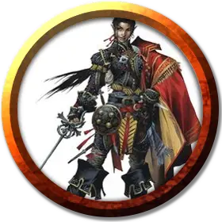

Виндхарроу
Windharrow
Средний Гуманоид (Полуэльф), нейтрально-злой, именной НИП

Класс Доспеха 15 (проклёпанный кожаный доспех)
Хиты 55 (10к8 + 10)
Скорость 30 футов
| мод | спас | ||
|---|---|---|---|
| СИЛ | 10 | +0 | +0 |
| ЛОВ | 16 | +3 | +3 |
| ТЕЛ | 12 | +1 | +1 |
| мод | спас | ||
|---|---|---|---|
| ИНТ | 14 | +2 | +2 |
| МДР | 10 | +0 | +0 |
| ХАР | 17 | +3 | +3 |
Навыки Акробатика +5, Выступление +7, Обман +7, Скрытность +5, Убеждение +5
Чувства тёмное зрение 60 футов, пассивное Восприятие 10
Языки Общий, Ауран, Эльфийский
Опасность 3 (700 опыта)
Бонус мастерства +2
Особенности
Наследие фей. Виндхарроу совершает с преимуществом спасброски от очарования, и его невозможно магически усыпить.
Использование заклинаний. Виндхарроу является заклинателем 8-го уровня. Его базовой характеристикой является Харизма (Сл спасброска от заклинаний 13, +5 к атакам заклинаниями). Он знает следующие заклинания барда:
• Заговоры (неограниченно): дружба [friends], фокусы [prestidigitation], злая насмешка [vicious mockery]
• 1 уровень (4 ячейки): маскировка [disguise self], диссонирующий шёпот [dissonant whispers], волна грома [thunderwave]
• 2 уровень (3 ячейки): невидимость [invisibility], дребезги [shatter], тишина [silence]
• 3 уровень (3 ячейки): необнаружимость [nondetection], послание [sending], языки [tongues]
• 4 уровень (2 ячейки): смятение [confusion], переносящая дверь [dimension door]
Действия
Мультиатака. Виндхарроу совершает две рукопашные атаки.
Рапира. Рукопашная атака оружием: +5 к попаданию, досягаемость 5 футов, одно существо. Попадание: колющий урон 7 (1к8 + 3).
Описание
Виндхарроу — меркантильный лунный полуэльф, бабник и бандит, прежде известный как Харальд Серое Копьё, получил своё новое имя от Аериси Калинос. Пока Аериси ещё жила со своей семьей, Харальд очарованием и лестью заслужил её расположение, а когда она сбежала из дома, чтобы стать пророком воздуха, то взяла Виндхарроу с собой.
По настоянию Аериси Виндхарроу набрал из служителей культа группу флейтистов, получившую название «Судьбы ветра». У большинства её участников нет вообще никакого таланта, и их музыка часто звучит как какофония. Из всех культистов воздуха «Судьбы ветра» наименее фанатичны и больше всех боятся умереть. Аериси избавляется от менестрелей по своей прихоти, заменяя их новыми посвящёнными. Те, кто смог хоть как-то овладеть игрой на своём инструменте, живут подольше, но высокая плата за ошибку создаёт тяжёлую атмосферу вечного соревнования среди музыкантов.
Виндхарроу предан Аериси Калинос только потому, что боится её силы. Если его жизнь будет под угрозой или он получит более выгодное предложение, Виндхарроу не раздумывая предаст культ.